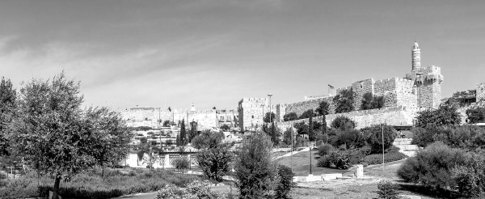

Yerushalayim Is Not "Aelia Capitolina"
The internationally renowned sculptor, Chaim Yaakov (Jacques) Lipchitz, received an offer that he couldn’t refuse: taking part in a project establishing a “sculpture garden” at the Jerusalem Museum. In a series of three letters recently publicized for the first time, the Rebbe instructed him to reject the offer, explaining at length the reasons why the Torah forbids such a venture.

The renowned sculpture artist, Jacques Lipchitz, was born Chaim Yaakov Lipchitz, on the 18th of Menachem Av 5651, in the city of Druskininkai, Latvia, then part of the Czarist Russian Empire. He went to high school in Bialystok, Poland, and then continued his engineering studies in Vilna. In 5669, he moved to Paris, changed his name to Jacques, and began studying art. Lipchitz eventually joined a group of artists, including the celebrated painter, Pablo Picasso.
In 5701, after Nazi Germany’s occupation of France, Lipchitz fled to the United States, leaving most of his finished and unfinished artwork behind him. He settled in New York, where he lived for the rest of his life. During his lifetime, he had a connection with the Rebbe on a number of issues. During the great Jewish re-awakening that occurred following the miracles of the Six Day War, the Rebbe mentioned at a farbrengen that a photograph showing Mr. Jacques Lipchitz publicly putting on t’fillin at the remnants of our Beis HaMikdash had a tremendous impact and influence upon large sectors of the world of art and culture.
Lipchitz passed away on the 24th of Iyar 5733, Shabbos Parshas B’Chukosai, in Capri, Italy, at the age of eighty-one. His body was brought to Eretz Yisroel for burial on Har Menuchot in Yerushalayim.
•
A few years ago, R’ Chaim Yehuda Krinsky revealed a most interesting story about this artist and his work:
Shortly after Mr. Lipchitz’s sudden passing, his widow came to 770 for a private audience with the Rebbe.
During the yechidus, Mrs. Lipchitz recalled that when her husband passed away, he was about to finish a large abstract sculpture of the phoenix, a mythical sand bird, contracted by the Hadassah Women’s Organization for the Hadassah Medical Center on Har HaTzofim in Yerushalayim.
As an artist and sculptor in her own right, Mrs. Lipchitz said that she wanted to complete her late husband’s unfinished sculpture. However, she claimed that Jewish leaders had told her that the phoenix was a non-Jewish symbol. If this was the case, was it inappropriate to erect such a piece of art in Yerushalayim?
Rabbi Krinsky was standing near the door to the Rebbe’s room, and in response to Mrs. Lipchitz’s query, the Rebbe asked that he bring him a copy of Iyov from his bookshelves.
The Rebbe turned to Chapter 29, and quoted from verse 18: “And I said, I will perish with my nest, and I will multiply days as the phoenix.” He then read Rashi’s commentary regarding the phoenix to Mrs. Lipchitz: “This is a bird…upon which the punishment of death was not decreed because it did not taste of the Tree of Knowledge, and at the end of one thousand years, it renews itself and returns to its youth.”
Therefore, the Rebbe concluded, this is clearly a Jewish symbol.
Mrs. Lipchitz was amazed by the Rebbe’s reply, and the project was completed shortly thereafter. When Rabbi Krinsky later came to Yerushalayim, he visited the hospital to see the artwork begun by Jacques Lipchitz and completed by his wife with the Rebbe’s approval.
How typical it was, Rabbi Krinsky noted, for the Rebbe to look at the positive side of something, while others chose only to see the negative…
We now bring a series of three letters that the Rebbe wrote to Mr. Lipchitz regarding an offer to take part in a project establishing a “sculpture garden” at the Jerusalem Museum and his instructions to reject the offer, explaining at length the reasons why the Torah forbids such a venture through a fascinating exposition on the Greco-Roman efforts to desecrate the holiness of Yerushalayim. With great pain and anguish, the Rebbe noted that the declared purpose of the project managers, including representatives of the Yerushalayim Municipality and the government of Israel, was to create a provocation against traditional Torah Judaism with the establishment of a “sculpture garden” and the opening of a mixed swimming pool in the Holy City…
By the Grace of G-d
In the Days of Slichos,
5721. Brooklyn, N.Y.
Mr. Chaim Jacob Lipchitz
168 Warbarton Ave.
Hastings-on-Hudson, N.Y.
Greeting and Blessing:
With the approach of Rosh Hashanah, the beginning of the New Year, may it bring blessings to us all, I send you and all yours my prayerful wishes for a good and happy year, materially and spiritually.
With the traditional blessing of K’siva Va’chasima Tova,
Cordially, M. SCHNEERSON
Thank you for your letter and good wishes for the New Year, and receipt is enclosed for your kind donation, which will surely stand you and yours in good stead.
I was very sorry to hear that you contemplate (?) to donate your sculptures for exhibition in a museum in Jerusalem, the Holy City, as I have had occasion to write to you in the past. However, on the basis of our friendship - and a true friendship calls for frankness and sincerity - I trust you will not take it amiss that I return to the subject. For you know the attitude of the Torah toward any kind of sculptured or graven images, and with what tragedy our people viewed the Roman attempt to turn the Holy City into an Aelia Capitolina. Of course, no one will suspect you of disregard for the sanctity of our Holy City, G-d forbid. But in such matters, good intentions do not alter the impact and consequences of an action on the public mind. Even if one could be sure that the majority of public opinion would not be shocked, and that is by no means certain, one cannot ignore the unfavorable influence in a matter that concerns a fundamental principle of our faith, even on a section of public opinion, and that should be adequate reason to avoid such an action. Certainly, all sections of Orthodox Jewry, not only in the Holy Land, but also in the Diaspora, would be quite chagrined, to say the least, although some quarters may suppress their reaction because of external pressure or other reasons. The whole question is much more serious than it may appear, and the few lines above, which have been couched in moderate and restrained terms, do not fully reflect the full depth of this question.
Having entered the New Year, may G-d grant that the renewed Divine blessings for this New Year, will include also the happy solution of the above problem.
By the Grace of G-d
7th of Teveth, 5722
Brooklyn, N.Y.
Mr. Chaim Yakob Lipchitz
168 Warbarton Ave.
Hastings-on-Hudson, N.Y.
Greeting and Blessing:
Thank you for your letter of December 10th. I particularly appreciate your candor, which indicates, I hope, a closeness as well as a confidence, and at the same time enables me to reciprocate in kind. I therefore hope that you will not take amiss my pursuing the subject of our recent correspondence further, inasmuch as it is a matter of public concern and of the highest order. After all, Jews are characterized as a “stiff-necked” nation, which means that Jews have the gift of perseverance and tenacity. Moreover, I feel that some points may not have been adequately covered in my previous letters.
First, however, let me refer to the point which you make regarding the apparent discrepancy between the ban on “graven images,” and the existence of the Cherubim, Lion, Ox, and other likenesses in the Beth HaMikdash. Surely, if there had been any discrepancy, there would have been some reference on the spot, since the commandment against graven images and likenesses, as well as the commandment to make the Cherubim on the cover of the Holy Ark, are to be found in the very same Book of Moses. Similarly, King Solomon, who built the Beth HaMikdash and included the said likenesses, could not have overlooked the possibility of a discrepancy. Nor would the Jewish people have accepted it, while at the same time carrying on a fight to eliminate the influences of idolatry of their neighbors, a fight which they carried on for hundreds of years after the erection of the Beth HaMikdash. I cannot go into the explanation of the apparent discrepancy which you question, since the explanation can be found in the authoritative commentaries who deal with it and adequately explain why the Cherubim, etc., did not constitute any kind of conflict with the commandment against graven images, etc.
The reason I brought up the point of Aelia Capitolina is because the Roman Empire knew well that the most deadly blow it could deal to the Jewish people was to convert Jerusalem into a Roman city of idols, hoping that what they could not achieve even by the destruction of the Beth HaMikdash and the annihilation of hundreds of thousands of Jews, they could accomplish by this measure aimed at the very heart of Jewish belief and religion.
Needless to say, I fully agree with you that the Torah is not confined to a body of laws and statutes, but contains also spiritual enlightenment, etc. Indeed, as my father-in-law of saintly memory often emphasized, the Torah embraces the whole life of the Jew, from the moment of his birth to his last breath, and it is called Toras Chaim, the Law of Life, in the sense that it is both a guide to the good life and also the source of life and expression of the living Jewish spirit. Within the framework of the Torah, therefore, there is ample room for such expression. As a matter of fact, which I believe we touched upon in our conversation, in the case of the majority of your works of art, there is no conflict with the Second Commandment, since they express symbolisms and ideas which are not incompatible with the Torah, and only a small proportion of your sculptures are subject to question in the light of the said Commandment.
The argument that the works of art represent a sublimity, etc., is irrelevant in this case. I can only illustrate this by a hypothetical case, such as if anyone would suggest to bring a Ballet into the Synagogue on the day of Yom Kippur, just before Neilah, on the ground that a Ballet is a source of sublime inspiration, etc. Whatever the merits of the argument, the “incongruity” is all too obvious. For the same reason (and others) even symbolic sculptures have no place in Jerusalem, the only city called Ircha - Thy City.
I must apologize for repeating myself, but I cannot refrain from emphasizing again the fact that the Holy Land is universally recognized as Holy, even by non-Jews, and within the Holy Land, the City of Jerusalem is called the Holy City. Millions of Jews still regard the City as holy, and pray daily for the return of the Shechinah to Jerusalem. This means that all these Jews are intimately associated with Jerusalem and consider it their city and to have a personal stake in it. Therefore, how can any individual, regardless of his own personal feelings, completely disregard and hurt the feelings of millions of others, all the more, in a matter which is of such sanctity and of such vital concern, at least to them? Obviously, the fact that the present government there endorses the project, does not in any way change the situation, for Jerusalem is the property of all Jews throughout the world, and no individual or group of individuals can impose their will upon others in a matter of such vital importance, regardless of the good intentions and motives.
Knowing you personally, and having met your mother already in Druskininkai, I feel confident that you will not want to be a party to such an unholy assault on the most sacred principle of our religion. I cannot imagine that you should want to have a part in it, however remote, especially to permit yourself to be the very center of this whole thing, and allow the work of a lifetime, with which you are so intimately identified, to become the tool wherewith to inflict such a grievous wound in the most sensitive feelings of our people.
As we have recently celebrated Chanukah, I cannot by-pass the message of Chanukah, which has such a direct bearing on our subject matter. For Chanukah recalls not only a battle for political freedom and independence, but mainly a battle of cultures. The Greeks wanted to introduce their culture and way of life into the Holy Land, claiming that there was much beauty in their art and sports which should supersede all other considerations. The Jews, however, resisted this with their very lives, and now we can see that of the ancient Greek sculptures there are only remnants in museums and the like, while the Jews are still very much a living nation, and their values have retained their eternal aspect. Yet in those days there were a number of prominent individuals, even among the Jews, who argued in favor of the Greek ideas against those of ours. But the Chanukah lights that we kindle to this day, which illuminate the Jewish home, serve as a perennial reminder of the vital issues, and the message is still very timely.
I hope that you will reconsider your position in the light of the above, and may G-d grant you many happy and healthy years to serve the cause of traditional Judaism by using your Divinely given gifts to strengthen the eternal values of our people, in full harmony with the Torah, along the lines which we had occasion to discuss.
With kindest personal regards, and
With blessing, M. SCHNEERSON
By the Grace of G-d
23rd of Adar I, 5722
Brooklyn, N.Y.
Mr. Chayim Yaakov Lipchitz
168 Warbarton Ave.
Hastings-on-Hudson, N.Y.
Greeting and Blessing:
Thank you for your letter of December 10th. I also received the book, Encounters, which I perused with great interest, although somewhat superficially, because of lack of time at this moment. I was particularly interested to note in it the photographs of your parents.
In keeping with the characterization of our Jewish people as a “stiff-necked” people, I will at once return to the theme of our recent correspondence, to which you reply in your letter. Having seen the book and the photographs, my views have been further reinforced, and I am more strongly convinced than ever that your participation in the museum in the Holy City of Jerusalem is not for you.
Now to refer to the contents of your letter.
You write that your participation will constitute only a minor part of the project. To this let me first of all say the following: You surely know that the whole project was started by one whose profession is associated with burlesque and night-show business, New York style. There are, unfortunately, elements in the Holy Land for whom such a person has a fascinating attraction. This is the element who not so very long ago began a battle to introduce into Jerusalem a swimming pool for mixed bathing. It is no coincidence that they should pick the Holy City for this venture, for there are many other large cities in the Eretz Yisroel where there are no mixed swimming pools. They chose Jerusalem with the calculated intention of making their attack as offensive and as provoking as possible. The project of the museum in Jerusalem is similarly used by these elements to strike a telling blow at all that is sacred to traditional Judaism. To our shame and disgrace this has unfortunately become a pattern of a calculated policy on the part of these elements to degrade the holiness of the Holy Land and to completely secularize Jewish life there. I ask you, therefore, is this the kind of company with which Chayim Yaakov Lipchitz, the grandson of Reb Chayim Yaakov Krinsky, should be associated?
As for your modesty in claiming that your participation is not significant, etc., etc., I can only say that so far the merits of the project were publicized not on the basis of the merits of the individuals clamoring for the implementation of the project, but it is safe to assume that the merits of the project will be proclaimed on the basis of your participation, which will be exploited to the full including the aid and comfort that it will add to the anti-religious elements in their battle for total secularization, as above. In such a situation, even a very “minor” participation cannot be justified, regardless how insignificant may be one’s share in such desecration, and even if one is convinced that the desecration will take place in any case.
You cite the well-known story related of the Baal Shem Tov in regard to a certain non-conventional manner of prayer which proved very effective. I have heard this story from my father-in-law of saintly memory in a version which has been published in the enclosed brochure. It is to the effect that a Jewish boy who grew up in the country without the benefit of Jewish education could not participate in the communal service on Yom Kippur, and being carried away by the fervor of prayer in the community, he exclaimed with ecstasy, “cock-a-doodle-do,” and it carried all the prayers of the community right to the Heavenly Throne. The moral of this story is surely not to make that exclamation a permanent institution of communal service on the Holy Day of Yom Kippur, just because a certain individual could not express his feelings in any other way.
Besides, and this is more important for our case, the attempt to express one’s feelings by the same sound as the rooster expresses his feelings, namely “cock-a-doodle-do,” is in itself quite an innocent one and does not evoke an “obstacle” to the outpouring of the soul and to the sanctity of the blessings, etc., which are associated with the Holy Day of Yom Kippur; only the external form of this expression strikes us as absurd. Essentially, it is in no way in conflict with the inner spirit of either the person expressing himself in such a manner, or of those surrounding him.
It is quite different from the illustration which I used, namely, to bring a ballet troupe into the Synagogue on Yom Kippur on the assumption that it might make some esthetic or artistic contribution. In this case, even the external form would be in violent conflict with the whole spiritual set-up, and the reactions that such a display often calls forth in many individuals would be absolutely contrary to the spirit.
Incidentally, throughout your letter I do not find a reply to one point which I raised, and which is fundamental to this issue. As a matter of fact, I do not think that there can be a reply to this point. I refer to the fact that Jerusalem is the Holy City not for a group of individuals, and not even for a large group of individuals, but it is intimately connected with the inner individual spiritual life of millions of Jews in our own time as well as in past and future generations. Moreover, it is more intimately bound up with those Jews who pray every day, and who have no conception of burlesque. Therefore, no one has a moral right to do something which many of them would consider as a most obvious desecration of their Holy of Holies, even in a small way, and even with the best of intentions. As I said, this would be true even in regard to the Holy of Holies of a single individual of a group of individuals, all the more so when it directly affects millions of our people, who pray daily for the return of the Shechinah (Divine Presence) in the Holy City and its restoration to its former glory and holiness.
As I wrote to you previously, I feel I have no choice but to be quite candid in my correspondence with you on this subject, because of the far-reaching implications of the issue. I’m therefore also pleased to see that you have expressed your views in a similar candid manner. This gives me the hope that eventually our views will coincide since, I am sure, both of us have the sacred heritage of our people at heart.
With kindest personal regards and with blessing, M. SCHNEERSON
P.S. – I noted in the book, Encounters, that you had occasion to deal with the question of the age of our universe and the Torah view on this, etc. I am, therefore, enclosing a copy of my correspondence on this and related questions, which I wrote in reply to an inquiry. I trust you will find it interesting.
Beis Moshiach (staff). "Yerushalayim Is Not "Aelia Capitolina"." Beis Moshiach, no. 928 (May 29, 2014).